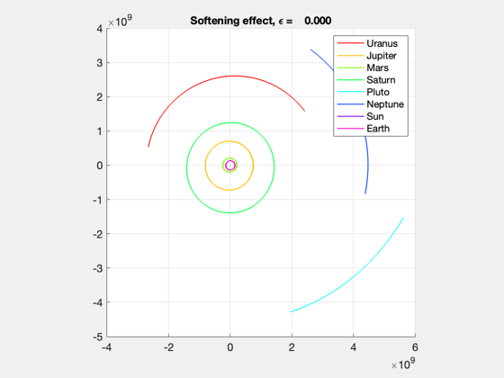
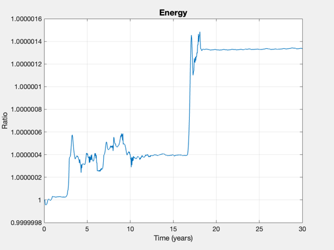

Contents
Simulate the solar system using an n-body model
Since version 10.
Data is from JPL Spice in the ECI frame
r = [16.18206328; 10.55942314; 4.395918394;...
0.6669951274;-4.753210313; -2.053593662;...
-1.144976174; -0.9848594743;-0.4208298694;...
3.889443059; -8.487034541; -3.673078467;...
13.03333484; -28.6074541; -12.85409378;...
29.25520938; -5.5714034; -3.00885915;...
0;0;0;...
-0.4784580376;0.7888076964;0.341946427];
v = [-0.002291953314; 0.00276358619; 0.001242648137;...
0.007400793096; 0.001280611399; 0.000368752274;...
0.01008460211; -0.008103206242; -0.003988888947;...
0.004841839853; 0.002062674926; 0.0006435963417;...
0.002978476523; 0.0008586864228;-0.0006269392078;...
0.0006485194846;0.002865878376; 0.001156881592;...
0;0;0;...
-0.01532009266;-0.007732691382;-0.003351509406];
mass = [193.6198014, 4233.996627, 1.431070769, 1267.752206, 0.03167478885,...
228.4368233, 4434470.44, 13.32085261];
r = [2420802199;1579667210;657620028.4;99781050.36;-711070138.4;-307213237.8;-171285996.8;-147332879.6;-62955252.1;581852397.1;-1269642290;-549484714.9;1949759131;-4279614199;-1922945051;4376517009;-833470081.6;-450118919.9;0;0;0;-71576303.31;118003951.2;51154457.13];
v = [-3.968418216;4.785030181;2.151591603;12.81415374;2.217323352;0.6384786429;17.46105319;-14.03035178;-6.906589007;8.383436677;3.571432585;1.114359281;5.157103514;1.48677847;-1.085518173;1.12288349;4.962144685;2.003090533;0;0;0;-26.52607905;-13.3888213;-5.802993848];
mass = [8.683574117e+16, 1.898887575e+18, 6.418149897e+14, 5.685689251e+17, 1.420569459e+13, 1.024506828e+17, 1.988797243e+21, 5.974213901e+15];
n = length(r);
x0 = zeros(2*n,1);
n = n/3;
j = 1;
i = 1;
for k = 1:n
vK = v(j:j+2);
rK = r(j:j+2);
x0(i:i+5) = [rK;vK];
j = j + 3;
i = i + 6;
end
t = linspace(0,30*365.25)*86400;
PropagateNBody( x0, t, mass, {'Uranus' 'Jupiter' 'Mars' 'Saturn' 'Pluto' 'Neptune' 'Sun' 'Earth' } );
 